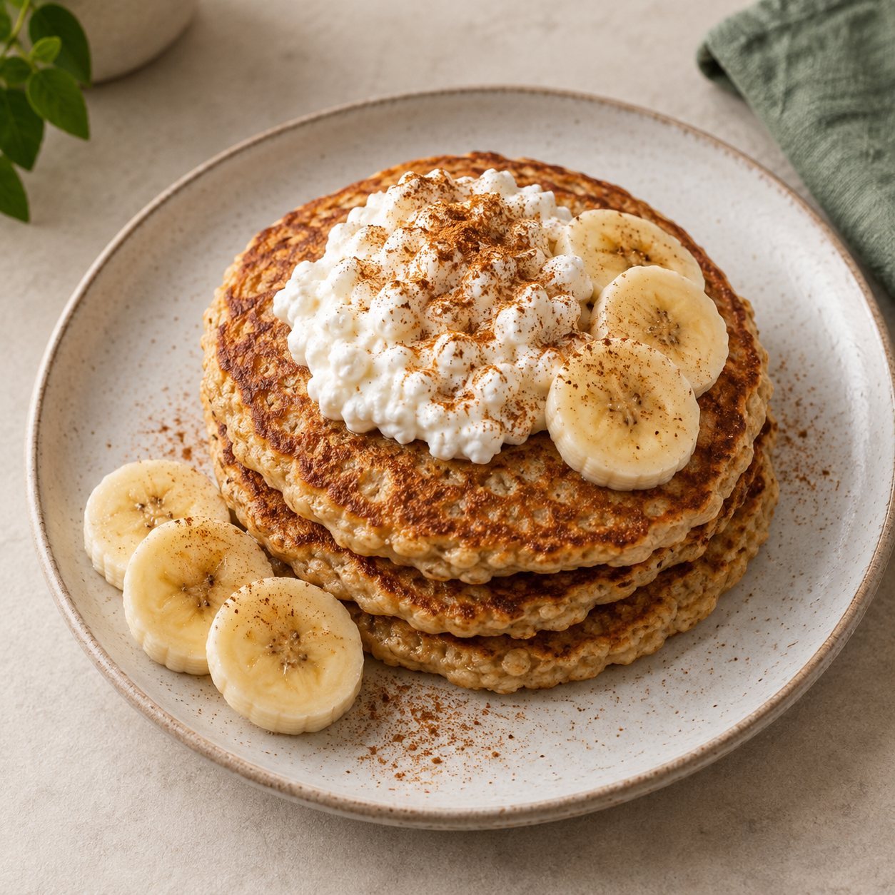
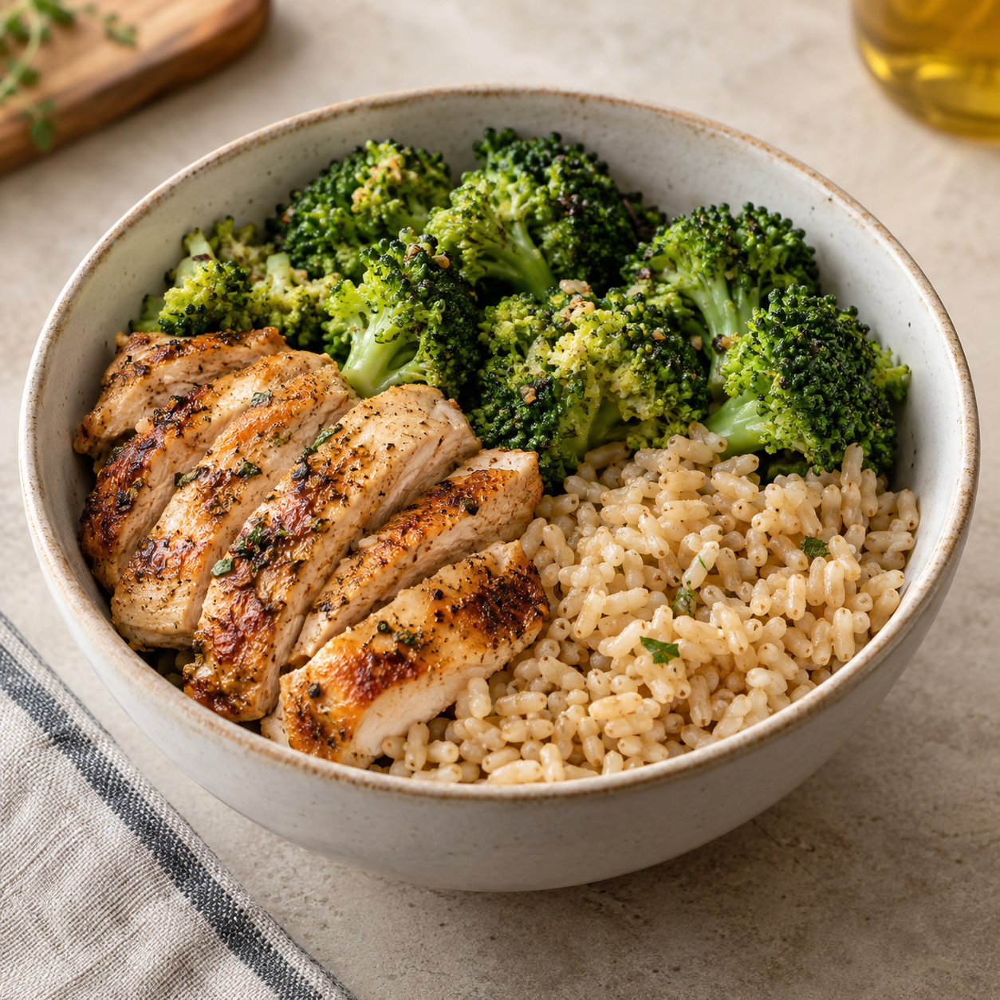
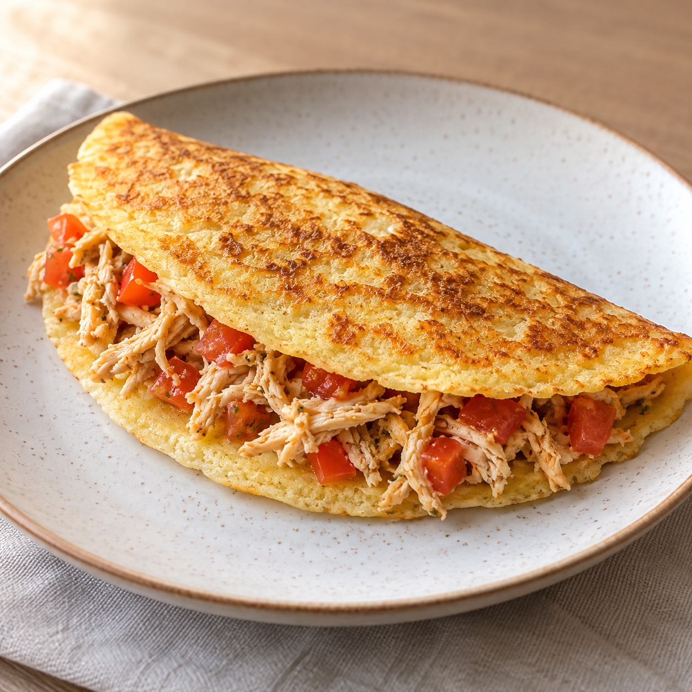
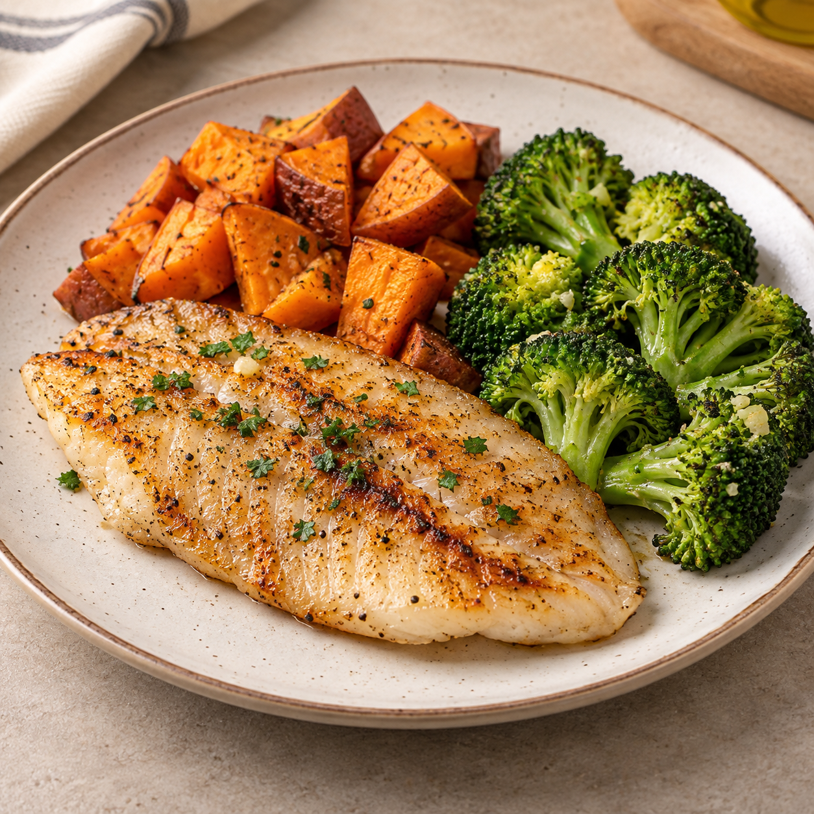
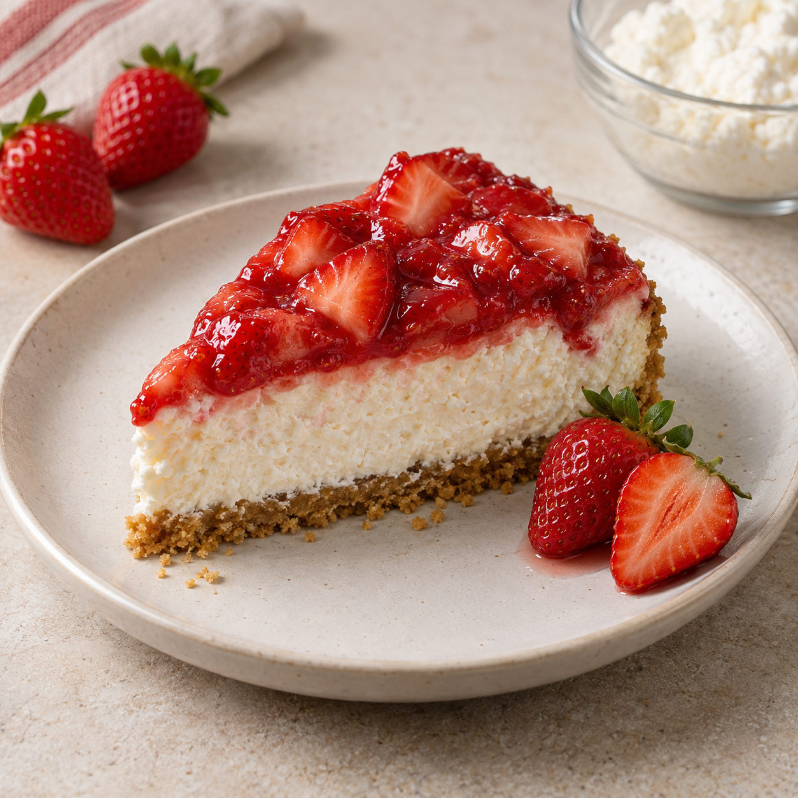
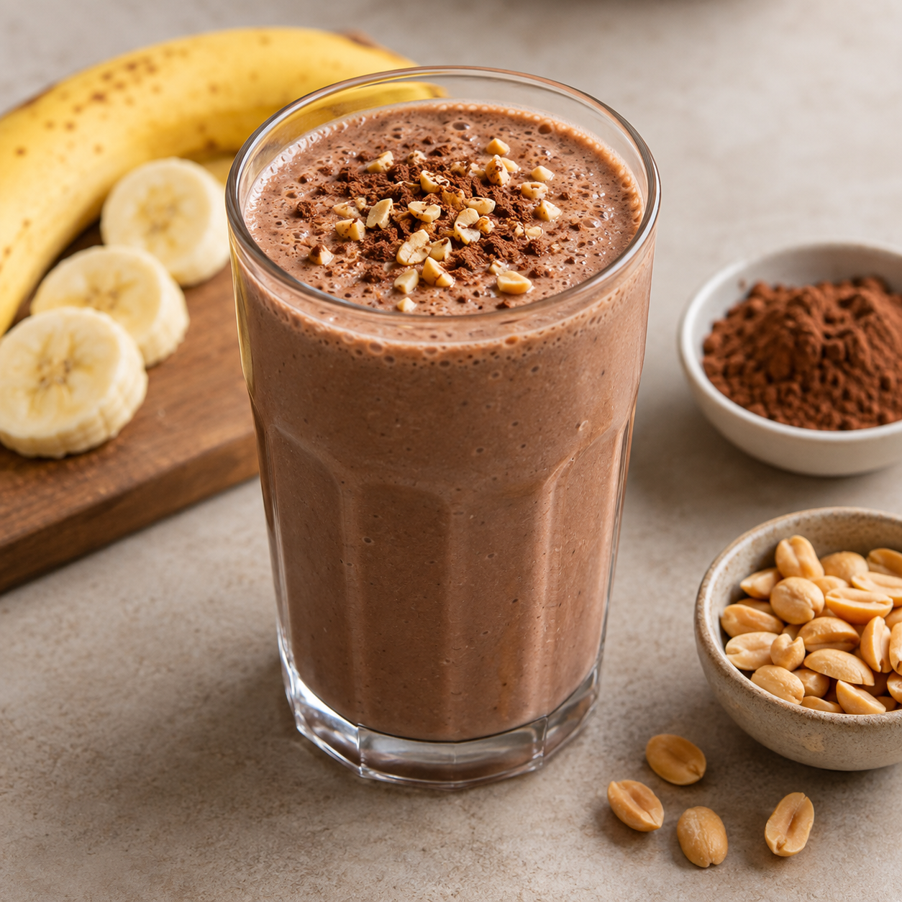
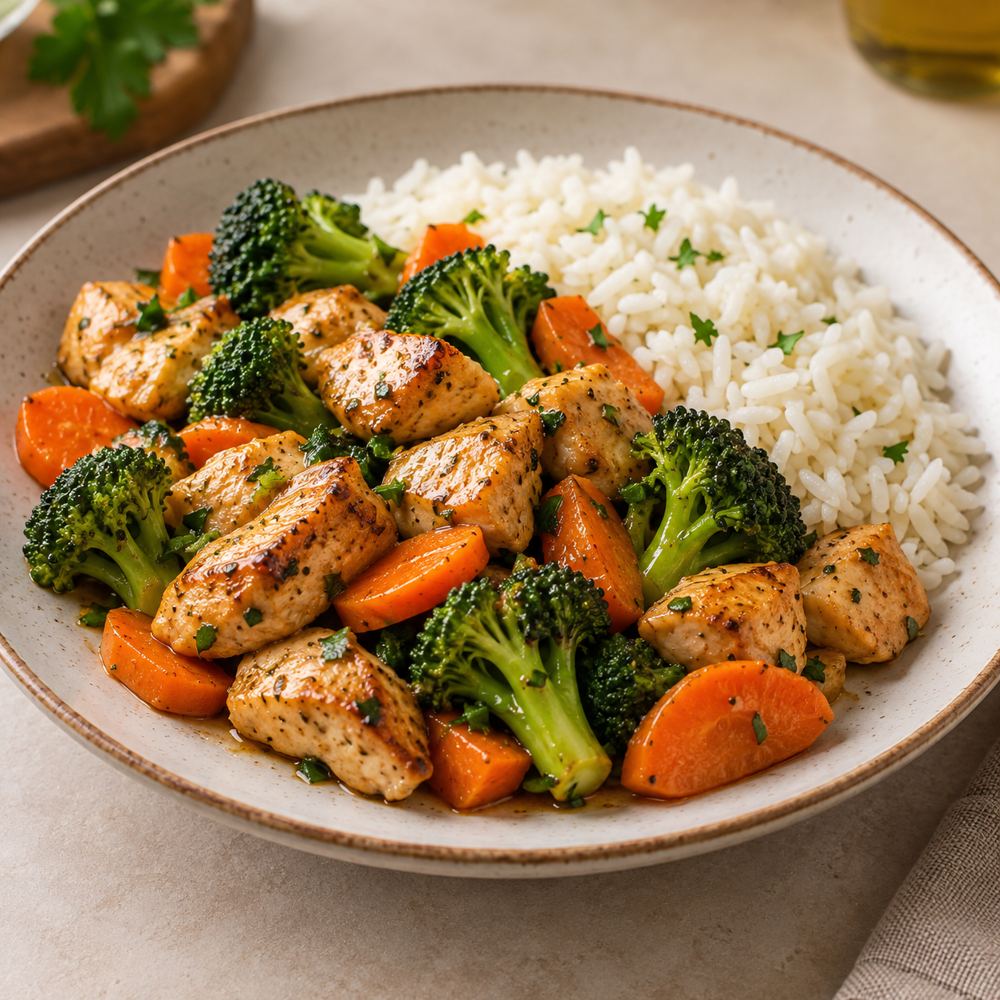
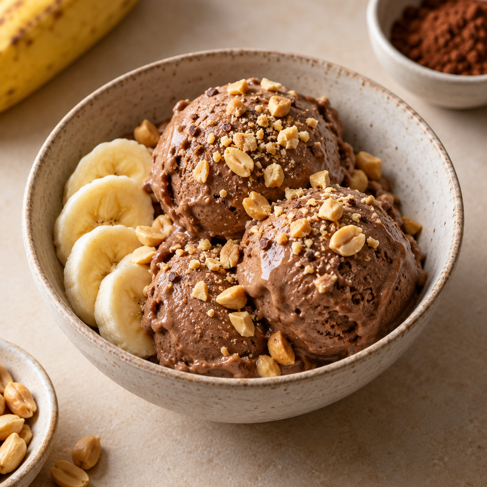

A mesma comida
Você começa animado, mas acaba repetindo as mesmas combinações por falta de repertório.
O Prot+ reúne receitas práticas, macros por porção e ferramentas para você decidir o que preparar sem depender da inspiração do dia.
Pagamento único · acesso digital · garantia de 45 dias

Às vezes faltam ideias rápidas, uma lista organizada e uma receita que explique exatamente o que fazer.
Você começa animado, mas acaba repetindo as mesmas combinações por falta de repertório.
Chega a hora da refeição e escolher o prato vira mais uma tarefa na agenda.
As ideias ficam em prints, vídeos e anotações difíceis de consultar na cozinha.

EXEMPLO DO ACERVOReceitas de café e lanches, almoço e jantar e sobremesas — com ingredientes acessíveis e preparo explicado.






Essas são apenas 6 das 120 receitas do acervo.
Encontre pelo nome ou ingrediente.
Proteína, calorias, carboidratos e gorduras.
Guarde as receitas que quer repetir.
Consulte na cozinha, sem arquivo pesado.
O Prot+ não entrega apenas uma lista de pratos: ele ajuda você a escolher e organizar.
Filtre receitas por faixa de proteína.
Monte uma semana de ideias em poucos cliques.
Descubra o que fazer com o que já tem.
Acompanhe sua meta de proteína.
Estruturas para casa e academia, com séries, repetições e progressão.
BÔNUS INCLUSOEstimativa educativa de TMB, gasto e distribuição de macros.
BÔNUS INCLUSOCombinações simples com ingredientes de supermercado.
BÔNUS INCLUSOVocê recebe acesso ao material digital após a confirmação do pagamento, conforme as condições do checkout.
Se o Prot+ não fizer sentido para você dentro do prazo informado, solicite o reembolso conforme as condições da garantia no checkout.
O Prot+ está pronto para ser consultado no seu celular e acompanhar sua rotina de refeições.
Voltar para a oferta ↑Checkout externo ainda não configurado. Quando a URL real da Payt estiver disponível, substitua o destino deste botão.
O acesso e as instruções de entrada devem ser enviados pelo checkout após a confirmação do pagamento.
Sim. Cada receita apresenta proteína, calorias, carboidratos e gorduras por porção, com memória de cálculo registrada.
Não. O acervo foi planejado com ingredientes comuns de supermercado no Brasil.
A oferta está estruturada como pagamento único, sem mensalidade prevista.
Não. É um material educativo e não substitui avaliação individualizada.
Consulte as condições e o prazo de 45 dias informados no checkout.